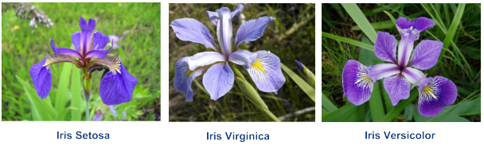
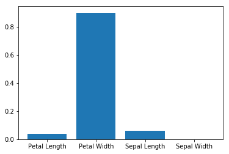
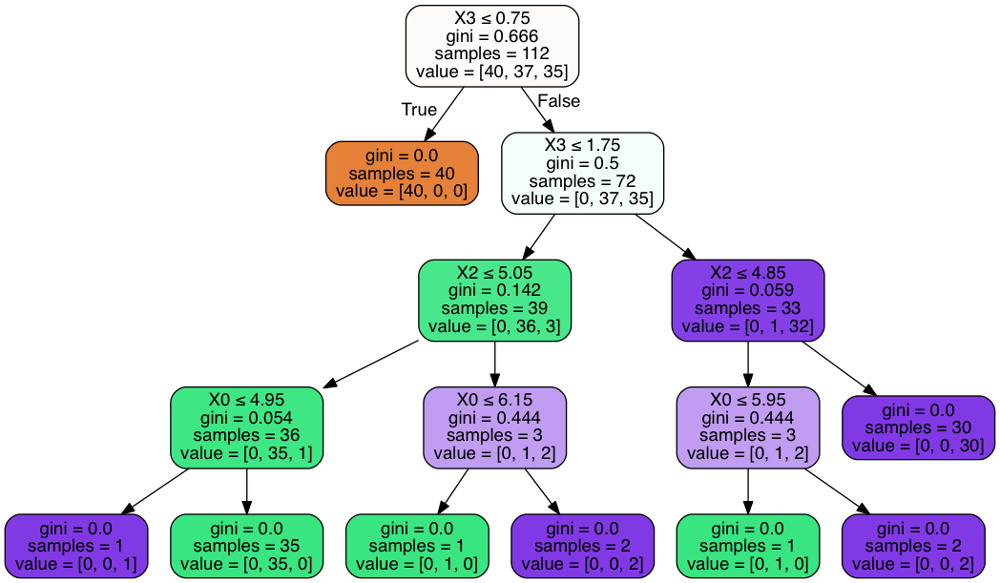
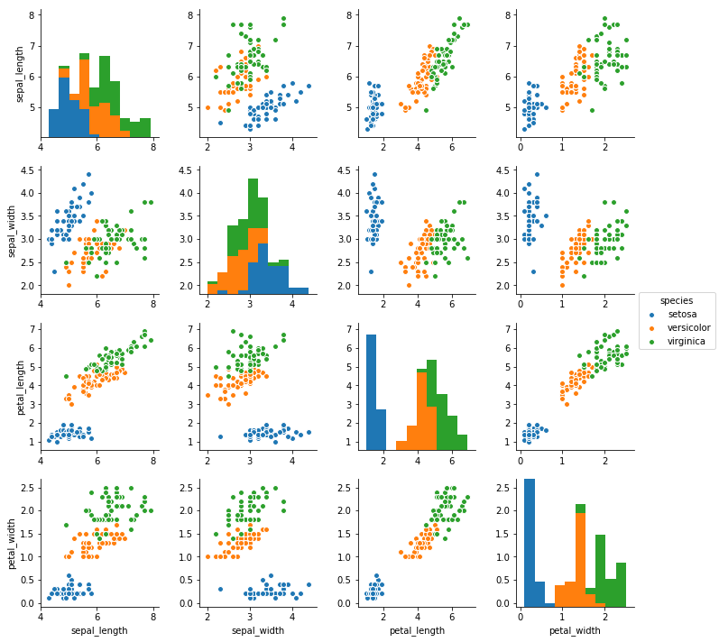
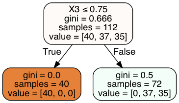
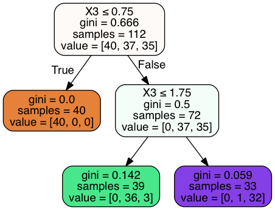
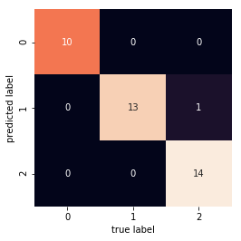
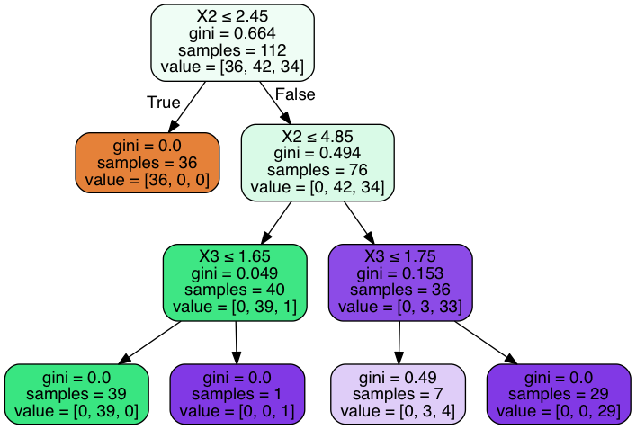
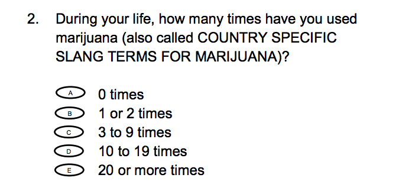
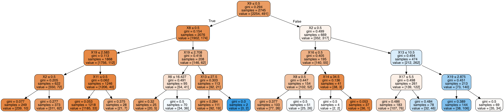

Decision Tree Classifiers¶
Example¶
Important Considerations¶
| PROS | CONS |
|---|---|
| Easy to visualize and Interpret | Prone to overfitting |
| No normalization of Data Necessary | Ensemble needed for better performance |
| Handles mixed feature types |
Iris Example¶
Use measurements to predict species

In [2]:
%matplotlib inline
import matplotlib.pyplot as plt
from sklearn.datasets import load_iris
from sklearn import tree
from sklearn.datasets import load_iris
from sklearn.tree import DecisionTreeClassifier
from sklearn.model_selection import train_test_split
In [3]:
import seaborn as sns
iris = sns.load_dataset('iris')
iris.head()
Out[3]:
| sepal_length | sepal_width | petal_length | petal_width | species | |
|---|---|---|---|---|---|
| 0 | 5.1 | 3.5 | 1.4 | 0.2 | setosa |
| 1 | 4.9 | 3.0 | 1.4 | 0.2 | setosa |
| 2 | 4.7 | 3.2 | 1.3 | 0.2 | setosa |
| 3 | 4.6 | 3.1 | 1.5 | 0.2 | setosa |
| 4 | 5.0 | 3.6 | 1.4 | 0.2 | setosa |
In [4]:
#split the data
iris = load_iris()
X_train, X_test, y_train, y_test = train_test_split(iris.data, iris.target)
In [5]:
len(X_test)
Out[5]:
38
In [6]:
#load classifier
clf = tree.DecisionTreeClassifier()
In [7]:
#fit train data
clf = clf.fit(X_train, y_train)
In [8]:
#examine score
clf.score(X_train, y_train)
Out[8]:
1.0
In [9]:
#against test set
clf.score(X_test, y_test)
Out[9]:
0.92105263157894735
How would specific flower be classified?¶
If we have a flower that has:
- Sepal.Length = 1.0
- Sepal.Width = 0.3
- Petal.Length = 1.4
- Petal.Width = 2.1
In [10]:
clf.predict_proba([[1.0, 0.3, 1.4, 2.1]])
Out[10]:
array([[ 0., 1., 0.]])
In [11]:
#cross validation
from sklearn.model_selection import cross_val_score
cross_val_score(clf, X_train, y_train, cv=10)
Out[11]:
array([ 0.83333333, 1. , 1. , 0.91666667, 0.91666667,
1. , 0.90909091, 1. , 1. , 0.9 ])
How important are different features?¶
In [12]:
#list of feature importance
clf.feature_importances_
Out[12]:
array([ 0.06184963, 0. , 0.03845214, 0.89969823])
In [13]:
imp = clf.feature_importances_
In [14]:
plt.bar(['Sepal Length', 'Sepal Width', 'Petal Length', 'Petal Width'], imp)
Out[14]:
<Container object of 4 artists>

Visualizing Decision Tree¶
pip install pydotplus
In [15]:
from sklearn.externals.six import StringIO
from IPython.display import Image
from sklearn.tree import export_graphviz
import pydotplus
dot_data = StringIO()
export_graphviz(clf, out_file=dot_data, filled=True, rounded=True, special_characters=True)
graph = pydotplus.graph_from_dot_data(dot_data.getvalue())
Image(graph.create_png())
Out[15]:

What’s Happening with Decision Tree¶

In [16]:
import seaborn as sns
iris = sns.load_dataset('iris')
sns.pairplot(data = iris, hue = 'species');

Pre-pruning: Avoiding Over-fitting¶
max_depth: limits depth of treemax_leaf_nodes: limits how many leafsmin_samples_leaf: limits splits to happen when only certain number of samples exist
In [17]:
clf = DecisionTreeClassifier(max_depth = 1).fit(X_train, y_train)
In [18]:
clf.score(X_train, y_train)
Out[18]:
0.6875
In [19]:
clf.score(X_test, y_test)
Out[19]:
0.60526315789473684
In [20]:
dot_data = StringIO()
export_graphviz(clf, out_file=dot_data, filled=True, rounded=True, special_characters=True)
graph = pydotplus.graph_from_dot_data(dot_data.getvalue())
Image(graph.create_png())
Out[20]:

In [21]:
clf = DecisionTreeClassifier(max_depth = 2).fit(X_train, y_train)
In [22]:
clf.score(X_train, y_train)
Out[22]:
0.9642857142857143
In [23]:
clf.score(X_test, y_test)
Out[23]:
0.94736842105263153
In [24]:
dot_data = StringIO()
export_graphviz(clf, out_file=dot_data, filled=True, rounded=True, special_characters=True)
graph = pydotplus.graph_from_dot_data(dot_data.getvalue())
Image(graph.create_png())
Out[24]:

In [25]:
clf = DecisionTreeClassifier(max_depth = 3).fit(X_train, y_train)
clf.score(X_train, y_train)
Out[25]:
0.9732142857142857
In [26]:
clf.score(X_test, y_test)
Out[26]:
0.97368421052631582
Confusion Matrix¶
In [29]:
from sklearn.metrics import classification_report
import sklearn.metrics
from sklearn.metrics import confusion_matrix
classifier=clf.fit(X_train,y_train)
predictions=clf.predict(X_test)
mat = confusion_matrix(y_test, predictions)
sns.heatmap(mat.T, square=True, annot=True, fmt='d', cbar=False)
plt.xlabel('true label')
plt.ylabel('predicted label');

In [30]:
sklearn.metrics.confusion_matrix(y_test, predictions)
Out[30]:
array([[10, 0, 0],
[ 0, 13, 0],
[ 0, 1, 14]])
In [27]:
sklearn.metrics.accuracy_score(y_test, predictions)
Out[27]:
0.94736842105263153
In [28]:
dot_data2 = StringIO()
export_graphviz(clf, out_file=dot_data2,
filled=True, rounded=True,
special_characters=True)
graph2 = pydotplus.graph_from_dot_data(dot_data2.getvalue())
Image(graph2.create_png())
Out[28]:

In [29]:
sklearn.metrics.accuracy_score(y_test, predictions)
Out[29]:
0.94736842105263153
Example with Adolescent Health Data¶

In [33]:
from pandas import Series, DataFrame
import pandas as pd
import numpy as np
import matplotlib.pylab as plt
from sklearn.metrics import classification_report
import sklearn.metrics
In [34]:
AH_data = pd.read_csv("data/tree_addhealth.csv")
data_clean = AH_data.dropna()
data_clean.dtypes
Out[34]:
BIO_SEX float64
HISPANIC float64
WHITE float64
BLACK float64
NAMERICAN float64
ASIAN float64
age float64
TREG1 float64
ALCEVR1 float64
ALCPROBS1 int64
marever1 int64
cocever1 int64
inhever1 int64
cigavail float64
DEP1 float64
ESTEEM1 float64
VIOL1 float64
PASSIST int64
DEVIANT1 float64
SCHCONN1 float64
GPA1 float64
EXPEL1 float64
FAMCONCT float64
PARACTV float64
PARPRES float64
dtype: object
In [35]:
data_clean.describe()
Out[35]:
| BIO_SEX | HISPANIC | WHITE | BLACK | NAMERICAN | ASIAN | age | TREG1 | ALCEVR1 | ALCPROBS1 | ... | ESTEEM1 | VIOL1 | PASSIST | DEVIANT1 | SCHCONN1 | GPA1 | EXPEL1 | FAMCONCT | PARACTV | PARPRES | |
|---|---|---|---|---|---|---|---|---|---|---|---|---|---|---|---|---|---|---|---|---|---|
| count | 4575.000000 | 4575.000000 | 4575.000000 | 4575.000000 | 4575.000000 | 4575.000000 | 4575.000000 | 4575.000000 | 4575.000000 | 4575.000000 | ... | 4575.000000 | 4575.000000 | 4575.000000 | 4575.000000 | 4575.000000 | 4575.000000 | 4575.000000 | 4575.000000 | 4575.000000 | 4575.000000 |
| mean | 1.521093 | 0.111038 | 0.683279 | 0.236066 | 0.036284 | 0.040437 | 16.493052 | 0.176393 | 0.527432 | 0.369180 | ... | 40.952131 | 1.618579 | 0.102514 | 2.645027 | 28.360656 | 2.815647 | 0.040219 | 22.570557 | 6.290710 | 13.398033 |
| std | 0.499609 | 0.314214 | 0.465249 | 0.424709 | 0.187017 | 0.197004 | 1.552174 | 0.381196 | 0.499302 | 0.894947 | ... | 5.381439 | 2.593230 | 0.303356 | 3.520554 | 5.156385 | 0.770167 | 0.196493 | 2.614754 | 3.360219 | 2.085837 |
| min | 1.000000 | 0.000000 | 0.000000 | 0.000000 | 0.000000 | 0.000000 | 12.676712 | 0.000000 | 0.000000 | 0.000000 | ... | 18.000000 | 0.000000 | 0.000000 | 0.000000 | 6.000000 | 1.000000 | 0.000000 | 6.300000 | 0.000000 | 3.000000 |
| 25% | 1.000000 | 0.000000 | 0.000000 | 0.000000 | 0.000000 | 0.000000 | 15.254795 | 0.000000 | 0.000000 | 0.000000 | ... | 38.000000 | 0.000000 | 0.000000 | 0.000000 | 25.000000 | 2.250000 | 0.000000 | 21.700000 | 4.000000 | 12.000000 |
| 50% | 2.000000 | 0.000000 | 1.000000 | 0.000000 | 0.000000 | 0.000000 | 16.509589 | 0.000000 | 1.000000 | 0.000000 | ... | 40.000000 | 0.000000 | 0.000000 | 1.000000 | 29.000000 | 2.750000 | 0.000000 | 23.700000 | 6.000000 | 14.000000 |
| 75% | 2.000000 | 0.000000 | 1.000000 | 0.000000 | 0.000000 | 0.000000 | 17.679452 | 0.000000 | 1.000000 | 0.000000 | ... | 45.000000 | 2.000000 | 0.000000 | 4.000000 | 32.000000 | 3.500000 | 0.000000 | 24.300000 | 9.000000 | 15.000000 |
| max | 2.000000 | 1.000000 | 1.000000 | 1.000000 | 1.000000 | 1.000000 | 21.512329 | 1.000000 | 1.000000 | 6.000000 | ... | 50.000000 | 19.000000 | 1.000000 | 27.000000 | 38.000000 | 4.000000 | 1.000000 | 25.000000 | 18.000000 | 15.000000 |
8 rows × 25 columns
In [36]:
predictors = data_clean[['BIO_SEX','HISPANIC','WHITE','BLACK','NAMERICAN','ASIAN',
'age','ALCEVR1','ALCPROBS1','marever1','cocever1','inhever1','cigavail','DEP1',
'ESTEEM1','VIOL1','PASSIST','DEVIANT1','SCHCONN1','GPA1','EXPEL1','FAMCONCT','PARACTV',
'PARPRES']]
targets = data_clean.TREG1
pred_train, pred_test, tar_train, tar_test = train_test_split(predictors, targets, test_size=.4)
print(pred_train.shape, pred_test.shape, tar_train.shape, tar_test.shape)
(2745, 24) (1830, 24) (2745,) (1830,)
In [37]:
#Build model on training data
classifier=DecisionTreeClassifier(max_depth = 4)
classifier=classifier.fit(pred_train,tar_train)
predictions=classifier.predict(pred_test)
sklearn.metrics.confusion_matrix(tar_test,predictions)
Out[37]:
array([[1415, 99],
[ 193, 123]])
In [38]:
sklearn.metrics.accuracy_score(tar_test, predictions)
Out[38]:
0.84043715846994538
In [39]:
from sklearn.externals.six import StringIO
from IPython.display import Image
from sklearn.tree import export_graphviz
import pydotplus
dot_data2 = StringIO()
export_graphviz(classifier, out_file=dot_data2,
filled=True, rounded=True,
special_characters=True)
graph2 = pydotplus.graph_from_dot_data(dot_data2.getvalue())
Image(graph2.create_png())
Out[39]:

In [40]:
sklearn.metrics.accuracy_score(tar_test, predictions)
Out[40]:
0.84043715846994538